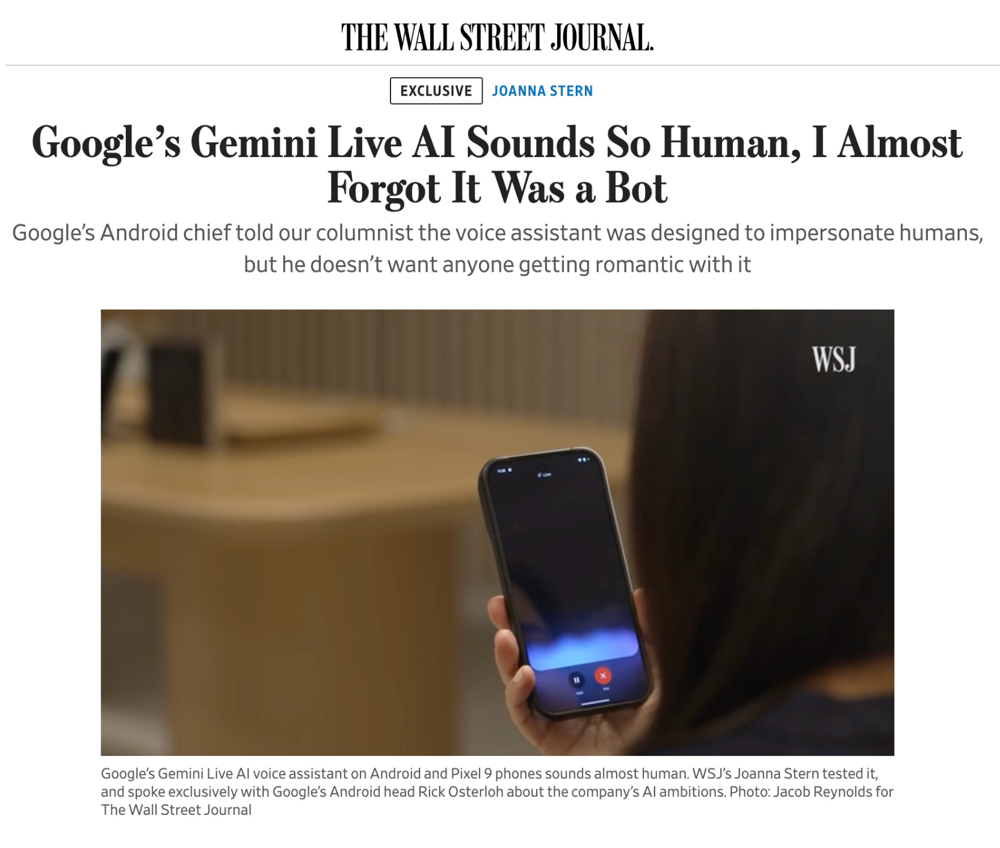

Gemini Live provides a natural way to interact with Google Gemini's large language model (LLM) conversationally with voice. Recent advances in voice technology have made speech recognition and natural language interaction with devices a compelling way to interact with LLMs. These advances have made it easier to create consumer applications for voice interaction as well. Our product and design teams envisioned a natural language product to become a helpful AI assistant enabling conversational interaction. I led visualization and design prototyping efforts in product development.
Conversation is a good way to talk through complex ideas. Imagine using technology as a conversation partner to explore a concept verbally, to toss ideas back and forth while brainstorming, or to prepare for an interview as a conversation partner.
It's difficult to design and prototype conversational user interfaces because they differ so much from conventional user interfaces. Speech user interfaces generally lack a comprehensive visual user interface. Furthermore, prototyping speech user interfaces requires extensive use of on-device speech recognition and text-to-speech APIs to achieve even a rudimentary level of realism.
LLMs make mimicking natural language communication easier to do, but there are still many challenges due to how LLMs hallucinate. Oddly, using LLMs means we do not have all the capabilities of conventional voice assistants, such as setting timers for events or accessing information from the Internet in real-time. Due to these factors, prototyping future looking conversational user interfaces can be difficult since the capabilities of current LLMs can lack functionality of LLMs of the near future.
To design and prototype a conversational user interface, I used many existing technologies to simulate the future. My prototype app started by using an early 1.0 version of Google Gemini's LLM. On top of this LLM I built a basic voice interaction interface with on-device text-to-speech and speech recognition APIs on both Android and iOS. While this meant that text-to-speech sounded a bit archaic and robotic, it enabled our small four person design team to quickly get a feel of how it would feel speaking to a mobile phone with the LLM.
An early prototype version showed conversation as two block-like entities going back and forth.
As a design team we wanted to make a conversational speech system feel non-robotic, natural and human-like. With this in mind, we wanted to simulate human-like features, including giving the appearance that the system breathed and thought like a human. With this feedback from our design and product teams, I embodied these qualities into the look and feel of the system with “breathing” pulsating gradients, and distinct visualizations contrasting user voice input to system voice output.
I experimented with using a "breathing" gradient to convey the notion of life.
User conversation with an application required visualizing several conversational states such as listening, user speaking, system processing and system responding. While these programmatic states are required to be reflected in the system, we also wished to create human-like conversation and show a back-and-forth speaking duality between two individuals. The design needed to reflect each individual as distinct participants. To accomplish this I explored several design iterations including UI elements that grew according to the active speaker, and sound wave visualizations that changed color and form based on the active speaker.
Showing the states of the system allows the user to understand when to speak and listen.
As the design progressed, I took advantage of more advanced technology to convey realistic conversation to our leadership team. These changes included using more sophisticated text-to-speech engines, and moving from on-device TTS to server-side voice generated output streamed to the device. Initially this came from Google Assistant and then from more advanced TTS APIs on Google's internal systems.
I also explored many different types of visualizations to show how voice could be brought to life. I started with conventional user interface toolkits to build the visualization UI, but it soon became necessary to create more complex visualizations to achieve a compelling UI. To do this I used graphics shader technology and wrote shaders using OpenGL technologies such as GLSL on Android and Metal on iOS.
In this iteration two distinct circles convey when the system or user is speaking.
A graphic shader exploration used a complex wave form to visualize sound.
To further extend the idea of the conversational partner being a living being, I made use of complex graphics shaders to give the visualization the appearance of a breathing life form. Using the device accelerometer and gyroscopes, I also allowed the user to move the visualization on the devices by physically moving and tilting the device. Finally, through use of text sentiment analysis I allowed the application to appear to emotionally respond based on positive or negative feedback from the user speaking.
To convey life, the system shows it's breathing.
The user can tilt and move the device to affect the "life form" inside.
The system responding to user emotions using sentiment analysis.
As the design and prototype reached a more mature state where our team became comfortable with interaction with the application, I worked closely with our engineering team to port much of the UI and visualizations into production code. I worked closely with our engineering team to productionize visualizations and spec out interaction. As part of this process, I incorporated sound into the UI from our sound designers, and I implemented haptic responses into the UI to complement UI interaction.
I ported much of the prototype visualization code into the production app.
Our VP of UX presented Gemini Live at Made by Google 2024, an event showcasing Google's latest Pixel phones and AI technology. At the event our VP of UX showcased Gemini Live's conversational capabilities in front of a live audience with real-time unscripted responses from the system. Gemini Live received largely positive media attention for having an innovative user interface and setting a new industry bar for natural language voice interaction capabilities in a consumer product.
Google UX VP presents Gemini Live at Made by Google 2024. Gemini Live received largely positive media attention.
